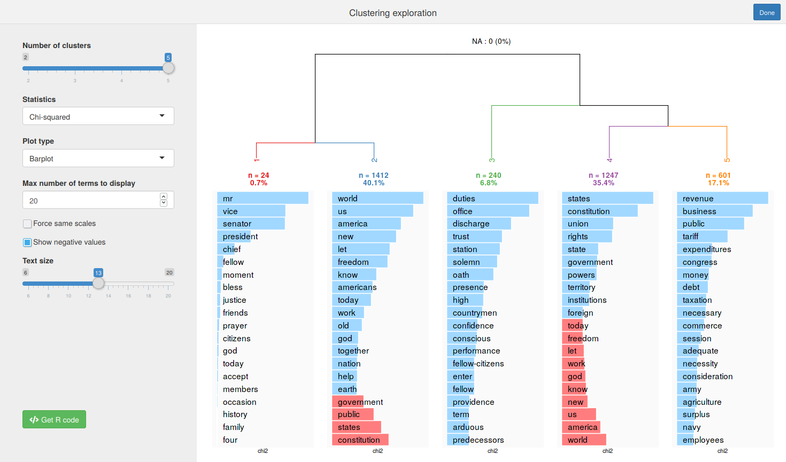
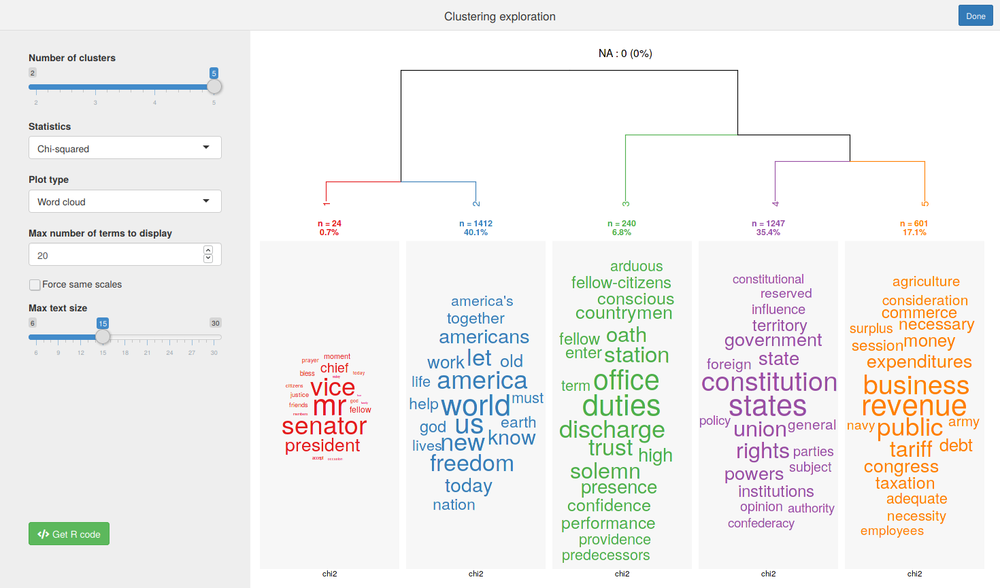

[en] Introduction to rainette
Julien Barnier
2021-03-30
Source:vignettes/introduction_en.Rmd
introduction_en.RmdReinert textual clustering method
rainette is an R implementation of the Reinert textual clustering algorithm. This algorithm is already available in softwares like Iramuteq or Alceste, the goal of rainette is to provide it as an R package.
This is not a new algorithm, as the first articles describing it date back to 1983. Here are some features of the method :
- each text is only assigned to one cluster, unlike methods like LDA.
- it is better suited to cluster small “homogeneous” documents : in fact the good practice is first to split texts into segments before applying the method.
- as the algorithm uses a singular value decomposition of a document-term matrix, the algorithm may not work on very large corpus.
Description of the algorithm
The Reinert method is a divisive hierarchical clustering algorithm whose aim is to maximise the inter-cluster Chi-squared distance.
The algorithm is applied to the document-term matrix computed on the corpus. Documents are called uce (elementary context units). If an uce doesn’t include enough terms, it is merged with the following one into an uc (context unit). The resulting matrix is then weighted as binary, so only the presence/absence of terms are taken into account, not their frequencies.
The aim is to split this matrix into two clusters by maximizing the Chi-squared distance between those. As an exhaustive search would be too compute-intensive, the following method is used to get a good approximation :
- first,
ucare ordered according to their coordinates on the first axis of the correspondance analysis of the binary matrix. -
ucare grouped in two clusters based on this order, and the grouping with the maximum inter-cluster Chi-squared distance is kept. - based on this grouping, each
ucis in turn assigned to the other cluster. If this new assignment gives a higher inter-cluster Chi-squared value, it is kept. The operation is repeated until no new assignment gives a higher Chi-squared. - finally, on the resulting clusters binary matrices, features are selected based on their frequency and on a contingency coefficient minimum value.
- the biggest of the two resulting clusters is then split with the same algorithm.
Double clustering
The Reinert method suggests to do a double clustering to get more robust clusters. This method is also implemented in rainette.
The principle is to run two simple clusterings by varying the minimum uc size. For example, the first one will be run with a minimum size of 10 terms, and the second one with a minimum size of 15.
The two sets of clusters are then “crossed” : every pair of clusters of each clustering are crossed together, even if they are not on the same hierarchical level. We then compute the number of uc present in both clusters, and a Chi-squared value of association between them.
Only a subset of all these “crossed-clusters” are kept : those with different elements, with a minimum number of uc or with a minimum association value. Then, for a given number of clusters k, the algorithm looks for the optimal partition of crossed-clusters, ie it keeps the set of crossed-clusters with no common elements, and with either the higher total number of elements, or the higher sum of Chi-squared association coefficients.
Then, this optimal partition is used either as the final clustering (with potentially quite a high proportion of NA), or as a starting point for a k-nearest-neighbour clustering for non-assigned documents.
References (in french)
- Reinert M, Une méthode de classification descendante hiérarchique : application à l’analyse lexicale par contexte, Cahiers de l’analyse des données, Volume 8, Numéro 2, 1983. http://www.numdam.org/item/?id=CAD_1983__8_2_187_0
- Reinert M., Alceste une méthodologie d’analyse des données textuelles et une application: Aurelia De Gerard De Nerval, Bulletin de Méthodologie Sociologique, Volume 26, Numéro 1, 1990. https://doi.org/10.1177/075910639002600103
rainette usage
Corpus preparation
split_segments
As explained before, as it doesn’t take into account terms frequencies and assign each document to only one cluster, the Reinert method must be applied to short and “homogeneous” documents. It could be ok if your work on short comments on a website, but on longer documents the corpus must first be split into small textual segments.
The split_segments function does just that, and can be applied on a tm or quanteda corpus.
On this article we will apply it to the sample data_corpus_inaugural quanteda corpus :
library(quanteda)
library(rainette)
corpus <- split_segments(data_corpus_inaugural)split_segments will split the original texts into smaller chunks, attempting to respect sentences and punctuation when possible. The function takes three arguments :
-
segment_size: the preferred segment size, in words -
segment_size_window: the “window” into which looking for the best segment split, in words. IfNULL, it is set to 0.4*segment_size. -
force_single_core: by default, multithreading is used when the corpus is big. Set this toTRUEto disable multithreading completely.
The result of the function is always a quanteda corpus, which keeps the original corpus metadata :
corpus## Corpus consisting of 3,527 documents and 5 docvars.
## 1789-Washington_1 :
## "Fellow-Citizens of the Senate and of the House of Representa..."
##
## 1789-Washington_2 :
## "On the one hand, I was summoned by my Country, whose voice I..."
##
## 1789-Washington_3 :
## "as the asylum of my declining years - a retreat which was re..."
##
## 1789-Washington_4 :
## "On the other hand, the magnitude and difficulty of the trust..."
##
## 1789-Washington_5 :
## "could not but overwhelm with despondence one who (inheriting..."
##
## 1789-Washington_6 :
## "In this conflict of emotions all I dare aver is that it has ..."
##
## [ reached max_ndoc ... 3,521 more documents ]## Year President FirstName Party segment_source
## 1 1789 Washington George none 1789-Washington
## 2 1789 Washington George none 1789-Washington
## 3 1789 Washington George none 1789-Washington
## 4 1789 Washington George none 1789-Washington
## 5 1789 Washington George none 1789-Washington
## 6 1789 Washington George none 1789-Washingtondfm computation
Next step is to compute the document-feature matrix. As our corpus object is a quanteda corpus, we can use its dfm function :
We only keep the terms that appear at least in 10 segments by using dfm_trim :
dtm <- dfm_trim(dtm, min_termfreq = 10)Simple clustering
We are now ready to compute a simple Reinert clustering by using the rainette function. Its main arguments are :
-
k: the number of clusters to compute. -
min_uc_size: the minimum number of terms in each context unit at startup (default : 10). If adfmdocument contains less than this number of terms, it will be merged with the following one. -
min_split_members: if a cluster is smaller than this value, it won’t be split afterwards (default : 5).
Here we will compute 5 clusters with a minimum_uc_size of 15 :
res <- rainette(dtm, k = 5, min_uc_size = 15)To help exploring the clustering results, rainette offers a small shiny gadget which can be launched with rainette_explor :
rainette_explor(res, dtm)The interactive interface should look something like this :

You can change the number of clusters, the keyness statistic used, etc., and see the result in real time. The most characteristics terms are displayed with a blue bar or a red one for those with a negative keyness.
It’s also possible to display terms keyness as word clouds :

At any time, you can click on the Get R code button to get the R code to reproduce the current plot and to compute cluster membership.
You can also directly use cutree_rainette to get each document cluster at level k :
groups <- cutree_rainette(res, k = 3)This vector can be used, for example, as a new corpus metadata variable :
## Year President FirstName Party segment_source group
## 1 1789 Washington George none 1789-Washington 2
## 2 1789 Washington George none 1789-Washington 2
## 3 1789 Washington George none 1789-Washington 2
## 4 1789 Washington George none 1789-Washington 2
## 5 1789 Washington George none 1789-Washington 1
## 6 1789 Washington George none 1789-Washington 1Finally, you can also directly compute each cluster keyness statistics with the rainette_stats function :
rainette_stats(corpus$group, dtm, n_terms = 5)## Registered S3 methods overwritten by 'quanteda.textstats':
## method from
## [.textstat quanteda
## as.data.frame.textstat_proxy quanteda
## as.list.textstat_proxy quanteda
## head.textstat_proxy quanteda
## tail.textstat_proxy quanteda## [[1]]
## # A tibble: 5 x 6
## feature chi2 p n_target n_reference sign
## <chr> <dbl> <dbl> <dbl> <dbl> <fct>
## 1 duties 231. 0 43 49 positive
## 2 office 217. 0 37 37 positive
## 3 discharge 153. 0 20 11 positive
## 4 trust 132. 0 27 33 positive
## 5 station 128. 0 13 3 positive
##
## [[2]]
## # A tibble: 5 x 6
## feature chi2 p n_target n_reference sign
## <chr> <dbl> <dbl> <dbl> <dbl> <fct>
## 1 world -151. 0 54 257 negative
## 2 us -144. 0 118 360 negative
## 3 america -129. 0 19 165 negative
## 4 new -111. 0 46 201 negative
## 5 states 109. 0 268 65 positive
##
## [[3]]
## # A tibble: 5 x 6
## feature chi2 p n_target n_reference sign
## <chr> <dbl> <dbl> <dbl> <dbl> <fct>
## 1 world 209. 0 253 58 positive
## 2 us 200. 0 348 130 positive
## 3 america 168. 0 162 22 positive
## 4 new 146. 0 195 52 positive
## 5 let 130. 0 133 21 positiveDouble clustering
rainette also offers a “double clustering” algorithm, as described above : two simple clusterings are computed with varying min_uc_size, and then combined to get a better partition and more robust clusters.
This can be done with the rainette2 function
rainette2 can be applied to two already computed simple clusterings. Here, we compute them with min_uc_size at 10 and 15 :
res1 <- rainette(dtm, k = 5, min_uc_size = 10, min_split_members = 10)
res2 <- rainette(dtm, k = 5, min_uc_size = 15, min_split_members = 10)We then use rainette2 to combine them. The main function arguments are max_k, the maximum number of clusters, and min_members, the minimum cluster size :
res <- rainette2(res1, res2, max_k = 5, min_members = 10)Another way is to call rainette2 directly on our dtm matrix by giving it two uc_size1 and uc_size2 arguments :
res <- rainette2(dtm, uc_size1 = 10, uc_size2 = 15, max_k = 5, min_members = 10)The resulting object is a tibble with, for each level k, the optimal partitions and their characteristics. Another interactive interface is available to explore the results. It is launched with rainette2_explor :
rainette2_explor(res, dtm)
The interface is very similar to the previous one, except there is no dendrogram anymore, but a single barplot with each cluster size instead. Be careful of the number of NA (not assigned documents), as it can be quite high. You can still use the Get R code button to get the current plot code, and use cutree_rainette to get clusters membership.
rainette_stats can also be used to get keyness statistics for each cluster :
groups <- cutree(res, 3)
rainette_stats(groups, dtm, n_terms = 5)## [[1]]
## # A tibble: 5 x 6
## feature chi2 p n_target n_reference sign
## <chr> <dbl> <dbl> <dbl> <dbl> <fct>
## 1 us -224. 0 110 368 negative
## 2 world -205. 0 52 259 negative
## 3 america -166. 0 18 166 negative
## 4 new -144. 0 47 200 negative
## 5 let -139. 0 15 139 negative
##
## [[2]]
## # A tibble: 5 x 6
## feature chi2 p n_target n_reference sign
## <chr> <dbl> <dbl> <dbl> <dbl> <fct>
## 1 mr 2539. 0 20 11 positive
## 2 vice 1906. 0 13 4 positive
## 3 senator 1167. 0 8 2 positive
## 4 president 871. 0 20 68 positive
## 5 chief 508. 0 10 26 positive
##
## [[3]]
## # A tibble: 5 x 6
## feature chi2 p n_target n_reference sign
## <chr> <dbl> <dbl> <dbl> <dbl> <fct>
## 1 us 213. 0 330 148 positive
## 2 world 207. 0 237 74 positive
## 3 america 185. 0 157 27 positive
## 4 new 173. 0 191 56 positive
## 5 let 157. 0 132 22 positiveFinally, if some points are not assigned to any cluster, you can use rainette2_complete_groups to assign them to the nearest one by using a k-nearest-neighbors algorithm :
groups_completed <- rainette2_complete_groups(dtm, groups)